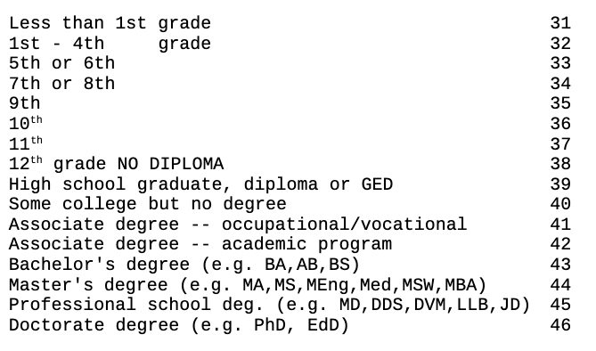

Estimating Gender Discrimination in the Workplace¶
In this exercise we’ll use data from the 2018 US Current Population Survey (CPS) to try and estimate the effect of being a woman on workplace compensation.
Note that our focus will be only on differential compensation in the work place, and as a result it is important to bear in mind that our estimates are not estimates of all forms of gender discrimination. For example, these analyses will not account for things like gender discrimination in terms of getting jobs. We’ll discuss this in more detail below.
Exercise 1:¶
Begin by downloading and importing 2018 CPS data from https://github.com/nickeubank/MIDS_Data/tree/master/Current_Population_Survey. The file is called morg18.dta and is a Stata dataset. Additional data on the dataset can be found by following the links in the README.txt file in the folder, but for the moment it is sufficient to know this is a national survey run in the United States.
The survey does include some survey weights we won’t be using (i.e. not everyone in the sample was included with the same probability), so the numbers we estimate will not be perfect estimates of the gender wage gap in the United States, but they are pretty close.
[1]:
import pandas as pd
import numpy as np
cps = pd.read_stata(
"https://github.com/nickeubank/MIDS_Data/"
"blob/master/Current_Population_Survey/morg18.dta?raw=true"
)
Exercise 2:¶
Because our interest is only in-the-workplace wage discrimination among full-time workers, we need to start by subsetting our data for people currently employed (and “at work”, not “absent”) at the time of this survey using the lfsr94 variable, who are employed full time (meaning that their usual hours per week—uhourse—is 35 or above).
As noted above, this analysis will miss many forms of gender discrimination. For example, in dropping anyone who isn’t working, we immediately lose any women who couldn’t get jobs, or who chose to lose the workforce because the wages they were offered (which were likely lower than those offered men) were lower than they were willing / could accept. And in focusing on full time employees, we miss the fact women may not be offered full time jobs at the same rate as men.
[2]:
cps = cps[cps.lfsr94 == "Employed-At Work"]
cps = cps[cps.uhourse >= 35]
cps.head()
[2]:
| hhid | intmonth | hurespli | hrhtype | minsamp | hrlonglk | hrsample | hrhhid2 | serial | hhnum | ... | ym_file | ym | ch02 | ch35 | ch613 | ch1417 | ch05 | ihigrdc | docc00 | dind02 | |
|---|---|---|---|---|---|---|---|---|---|---|---|---|---|---|---|---|---|---|---|---|---|
| 2 | 000110339935453 | January | 1.0 | Unmarried civilian female primary fam householder | MIS 4 | MIS 2-4 Or MIS 6-8 (link To | 0701 | 07011 | 1 | 1 | ... | 696 | 693 | 0 | 0 | 0 | 1 | 0 | 12.0 | Office and administrative support occupations | Health care services , except hospitals |
| 3 | 000110339935453 | January | 1.0 | Unmarried civilian female primary fam householder | MIS 4 | MIS 2-4 Or MIS 6-8 (link To | 0701 | 07011 | 1 | 1 | ... | 696 | 693 | 0 | 0 | 0 | 0 | 0 | 12.0 | Office and administrative support occupations | Administrative and support services |
| 4 | 000110359424339 | January | 1.0 | Unmarried civilian female primary fam householder | MIS 4 | MIS 2-4 Or MIS 6-8 (link To | 0711 | 07111 | 1 | 1 | ... | 696 | 693 | 0 | 0 | 0 | 0 | 0 | NaN | Healthcare practitioner and technical occupations | Hospitals |
| 6 | 000110651278174 | January | 1.0 | Civilian male primary individual | MIS 8 | MIS 2-4 Or MIS 6-8 (link To | 0601 | 06011 | 1 | 1 | ... | 696 | 681 | 0 | 0 | 0 | 0 | 0 | 12.0 | Transportation and material moving occupations | Transportation and warehousing |
| 17 | 007680515071194 | January | 1.0 | Civilian male primary individual | MIS 8 | MIS 2-4 Or MIS 6-8 (link To | 0611 | 06112 | 2 | 2 | ... | 696 | 681 | 0 | 0 | 0 | 0 | 0 | 12.0 | Transportation and material moving occupations | Retail trade |
5 rows × 98 columns
Exercise 3¶
Now let’s estimate the basic wage gap for the United States!
Earnings per week worked can be found in the earnwke variable. Using the variable sex (1=Male, 2=Female), estimate the gender wage gap in terms of wages per hour worked!
(You may also find it helpful, for context, to estimate the average hourly pay by dividing weekly pay by uhourse.)
[3]:
cps["female"] = (cps.sex == 2).astype("int")
cps["implied_hourly_wages"] = cps["earnwke"] / cps["uhourse"]
mean_female = cps[cps.female == 1].earnwke.mean()
mean_male = cps[cps.female == 0].earnwke.mean()
avg = cps.earnwke.mean()
[4]:
print(f"avg weekly wage for women is {mean_female:.2f}")
print(f"avg weekly wage for men is {mean_male:.2f}")
print(f"weekly gender wage gap is {mean_male - mean_female:.2f} dollars,")
print(f"a difference of {(mean_male - mean_female)/avg:.1%}")
avg weekly wage for women is 985.68
avg weekly wage for men is 1204.73
weekly gender wage gap is 219.05 dollars,
a difference of 19.8%
[5]:
print(f"avg hourly wage is AROUND {mean_female/40:.2f} for women")
print(f"avg hourly wage is AROUND {mean_male/40:.2f} for men")
avg hourly wage is AROUND 24.64 for women
avg hourly wage is AROUND 30.12 for men
Exercise 4¶
Assuming 48 work weeks in a year, calculate annual earnings for men and women. Report the difference in dollars and in percentage terms.
[6]:
cps["annual_earnings"] = cps["earnwke"] * 48
mean_female = cps[cps.female == 1].annual_earnings.mean()
mean_male = cps[cps.female == 0].annual_earnings.mean()
avg = cps.annual_earnings.mean()
[7]:
print(f"On average men who work full time earn {mean_male:,.2f} dollars a year")
print(f"On average women who work full time earn {mean_female:,.2f} dollars a year")
print(f"annual gender wage gap is {mean_male - mean_female:,.2f} dollars,")
print(f"a difference of {(mean_male - mean_female) / avg:.2%}")
On average men who work full time earn 57,827.22 dollars a year
On average women who work full time earn 47,312.79 dollars a year
annual gender wage gap is 10,514.44 dollars,
a difference of 19.82%
Exercise 5¶
We just compared all full-time working men to all full-time working women. For this to be an accurate causal estimate of the effect of being a woman in the work place, what must be true of these two groups? What is one reason that this may not be true?
[8]:
# That men and women have the same potential outcomes,
# meaning that if the men suddenly swapped genders, they'd
# make what women make now.
# This doesn't work if, for example, men have higher educations,
# or if the men in the sample are older (and thus have more work)
# experience.
Exercise 6¶
One answer to the second part of Exercise 5 is that working women are likely to be younger, since a larger portion of younger women are entering the workforce as compared to older generations.
To control for this difference, let’s now regress annual earnings on gender, age, and age-squared (the relationship between age and income is generally non-linear). What is the implied average annual wage difference between women and men? Is it different from your raw estimate?
[9]:
import statsmodels.formula.api as smf
cps["age_squared"] = cps.age**2
smf.ols("annual_earnings ~ female + age+ age_squared", cps).fit().summary()
[9]:
| Dep. Variable: | annual_earnings | R-squared: | 0.060 |
|---|---|---|---|
| Model: | OLS | Adj. R-squared: | 0.060 |
| Method: | Least Squares | F-statistic: | 2625. |
| Date: | Sat, 04 Mar 2023 | Prob (F-statistic): | 0.00 |
| Time: | 14:15:21 | Log-Likelihood: | -1.4441e+06 |
| No. Observations: | 122603 | AIC: | 2.888e+06 |
| Df Residuals: | 122599 | BIC: | 2.888e+06 |
| Df Model: | 3 | ||
| Covariance Type: | nonrobust |
| coef | std err | t | P>|t| | [0.025 | 0.975] | |
|---|---|---|---|---|---|---|
| Intercept | 3.833e+04 | 315.241 | 121.587 | 0.000 | 3.77e+04 | 3.89e+04 |
| female | -1.062e+04 | 181.123 | -58.641 | 0.000 | -1.1e+04 | -1.03e+04 |
| age | 456.6349 | 6.839 | 66.766 | 0.000 | 443.230 | 470.040 |
| age_squared | -0.2740 | 1.241 | -0.221 | 0.825 | -2.706 | 2.158 |
| Omnibus: | 18297.323 | Durbin-Watson: | 1.733 |
|---|---|---|---|
| Prob(Omnibus): | 0.000 | Jarque-Bera (JB): | 27620.546 |
| Skew: | 1.110 | Prob(JB): | 0.00 |
| Kurtosis: | 3.692 | Cond. No. | 269. |
Notes:
[1] Standard Errors assume that the covariance matrix of the errors is correctly specified.
Exercise 7¶
In running this regression and interpreting the coefficient on female, what is the implicit comparison you are making? In other words, when we run this regression and interpreting the coefficient on female, we’re basically pretending we are comparing two groups and assuming they are counter-factuals for one another. What are these two groups?
[10]:
# We are implicitly comparing men and women OF THE SAME AGE.
Exercise 8¶
Now let’s add to our regression an indicator variable for whether the respondent has at least graduated high school, and an indicator for whether the respondent at least has a BA.
In answering this question, use the following table of codes for the variable grade92.
Education is coded as follows:
[11]:
cps["has_highschool"] = cps.grade92 >= 39
cps["has_ba"] = cps.grade92 >= 43
m_educ = smf.ols("annual_earnings ~ female + age + age_squared + has_highschool + has_ba", cps).fit()
m_educ.summary()
[11]:
| Dep. Variable: | annual_earnings | R-squared: | 0.259 |
|---|---|---|---|
| Model: | OLS | Adj. R-squared: | 0.259 |
| Method: | Least Squares | F-statistic: | 8573. |
| Date: | Sat, 04 Mar 2023 | Prob (F-statistic): | 0.00 |
| Time: | 14:15:21 | Log-Likelihood: | -1.4296e+06 |
| No. Observations: | 122603 | AIC: | 2.859e+06 |
| Df Residuals: | 122597 | BIC: | 2.859e+06 |
| Df Model: | 5 | ||
| Covariance Type: | nonrobust |
| coef | std err | t | P>|t| | [0.025 | 0.975] | |
|---|---|---|---|---|---|---|
| Intercept | 1.579e+04 | 420.146 | 37.577 | 0.000 | 1.5e+04 | 1.66e+04 |
| has_highschool[T.True] | 1.373e+04 | 344.678 | 39.840 | 0.000 | 1.31e+04 | 1.44e+04 |
| has_ba[T.True] | 2.756e+04 | 167.116 | 164.937 | 0.000 | 2.72e+04 | 2.79e+04 |
| female | -1.3e+04 | 161.440 | -80.496 | 0.000 | -1.33e+04 | -1.27e+04 |
| age | 445.9737 | 6.074 | 73.426 | 0.000 | 434.069 | 457.878 |
| age_squared | -0.3958 | 1.102 | -0.359 | 0.719 | -2.555 | 1.763 |
| Omnibus: | 14257.428 | Durbin-Watson: | 1.849 |
|---|---|---|---|
| Prob(Omnibus): | 0.000 | Jarque-Bera (JB): | 20565.673 |
| Skew: | 0.890 | Prob(JB): | 0.00 |
| Kurtosis: | 3.926 | Cond. No. | 481. |
Notes:
[1] Standard Errors assume that the covariance matrix of the errors is correctly specified.
Exercise 9¶
In running this regression and interpreting the coefficient on female, what is the implicit comparison you are making? In other words, when we run this regression and interpreting the coefficient on female, we are once more basically pretending we are comparing two groups and assuming they are counter-factuals for one another. What are these two groups?
[12]:
# Men and women of the same age and educational attainment
Exercise 10¶
Given how the coefficient on female has changed between Exercise 6 and Exercise 8, what can you infer about the educational attainment of the women in your survey data (as compared to the educational attainment of men)?
[13]:
# Given there are positive returns to education,
# if controlling for education results in the female penalty increasing,
# that implies that women have higher educations.
# As a result, if we *don't* control for education,
# their wages look more fair than they should be.
Exercise 11¶
What does that tell you about the potential outcomes of men and women before you added education as a control?
[14]:
# They were substantially different!
# In particular, looks like women in the work force had greater educational
# levels, and so had higher wages in all states of the world.
Exercise 12¶
Finally, let’s include fixed effects for the type of job held by each respondent.
Fixed effects are a method used when we have a nested data structure in which respondents belong to groups, and those groups may all be subject to different pressures. In this context, for example, we can add fixed effects for the industry of each respondent—since wages often vary across industries, controlling for industry is likely to improve our estimates. Use ind02 to control for industry.
(Note that fixed effects are very similar in principle to hierarchical models. There are some differences you will read about for our next class, but they are designed to serve the same role, just with slightly different mechanics).
When we add fixed effects for groups like this, our interpretation of the other coefficients changes. Whereas in previous exercises we were trying to explain variation in men and women’s wages across all respondents, we are now effectively comparing men and women’s wages within each employment sector. Our coefficient on female, in other words, now tells us how much less (on average) we would expect a woman to be paid than a man within the same industry, not across all respondents.
(Note that running this regression will result in lots of coefficients popping up you don’t care about. We’ll introduce some more efficient methods for adding fixed effects that aren’t so messy in a later class – for now, you can ignore those coefficients!)
[15]:
m_industry = smf.ols(
"annual_earnings ~ female + age + age_squared + has_highschool + has_ba + C(ind02)", cps
).fit()
m_industry.summary()
[15]:
| Dep. Variable: | annual_earnings | R-squared: | 0.309 |
|---|---|---|---|
| Model: | OLS | Adj. R-squared: | 0.308 |
| Method: | Least Squares | F-statistic: | 208.0 |
| Date: | Sat, 04 Mar 2023 | Prob (F-statistic): | 0.00 |
| Time: | 14:15:25 | Log-Likelihood: | -1.4253e+06 |
| No. Observations: | 122603 | AIC: | 2.851e+06 |
| Df Residuals: | 122339 | BIC: | 2.854e+06 |
| Df Model: | 263 | ||
| Covariance Type: | nonrobust |
| coef | std err | t | P>|t| | [0.025 | 0.975] | |
|---|---|---|---|---|---|---|
| Intercept | 1.1e+04 | 1138.124 | 9.662 | 0.000 | 8766.093 | 1.32e+04 |
| has_highschool[T.True] | 1.116e+04 | 342.325 | 32.593 | 0.000 | 1.05e+04 | 1.18e+04 |
| has_ba[T.True] | 2.484e+04 | 178.336 | 139.276 | 0.000 | 2.45e+04 | 2.52e+04 |
| C(ind02)[T.Animal production (112)] | -857.9634 | 1701.897 | -0.504 | 0.614 | -4193.652 | 2477.726 |
| C(ind02)[T.Forestry except logging (1131, 1132)] | 923.8666 | 3722.793 | 0.248 | 0.804 | -6372.745 | 8220.478 |
| C(ind02)[T.Logging (1133)] | 5656.2100 | 2999.270 | 1.886 | 0.059 | -222.309 | 1.15e+04 |
| C(ind02)[T.Fishing, hunting, and trapping (114)] | 3510.2980 | 4528.918 | 0.775 | 0.438 | -5366.306 | 1.24e+04 |
| C(ind02)[T.Support activities for agriculture and forestry (115)] | 6207.2024 | 2760.458 | 2.249 | 0.025 | 796.750 | 1.16e+04 |
| C(ind02)[T.Oil and gas extraction (211)] | 3.392e+04 | 3072.516 | 11.040 | 0.000 | 2.79e+04 | 3.99e+04 |
| C(ind02)[T.Coal mining (2121)] | 2.528e+04 | 2550.842 | 9.910 | 0.000 | 2.03e+04 | 3.03e+04 |
| C(ind02)[T.Metal ore mining (2122)] | 3.384e+04 | 4184.931 | 8.087 | 0.000 | 2.56e+04 | 4.2e+04 |
| C(ind02)[T.Nonmetallic mineral mining and quarrying (2123)] | 1.538e+04 | 2391.495 | 6.431 | 0.000 | 1.07e+04 | 2.01e+04 |
| C(ind02)[T.Support activities for mining (213)] | 2.773e+04 | 1513.225 | 18.325 | 0.000 | 2.48e+04 | 3.07e+04 |
| C(ind02)[T.Electric power generation, transmission and distribution (Pt. 2211)] | 2.162e+04 | 1437.245 | 15.040 | 0.000 | 1.88e+04 | 2.44e+04 |
| C(ind02)[T.Natural gas distribution (Pt.s2212)] | 1.588e+04 | 2480.013 | 6.403 | 0.000 | 1.1e+04 | 2.07e+04 |
| C(ind02)[T.Electric and gas, and other combinations (Pts. 2211, 2212)] | 2.171e+04 | 2685.044 | 8.086 | 0.000 | 1.64e+04 | 2.7e+04 |
| C(ind02)[T.Water, steam, air-conditioning, and irrigation systems (22131, 22133)] | 5944.3370 | 1982.015 | 2.999 | 0.003 | 2059.620 | 9829.054 |
| C(ind02)[T.Sewage treatment facilities (22132)] | 8219.6616 | 3000.599 | 2.739 | 0.006 | 2338.538 | 1.41e+04 |
| C(ind02)[T.Not specified utilities (Part of 22)] | 1.986e+04 | 5880.719 | 3.377 | 0.001 | 8332.241 | 3.14e+04 |
| C(ind02)[T.** Construction (23)] | 1.056e+04 | 1126.250 | 9.372 | 0.000 | 8347.899 | 1.28e+04 |
| C(ind02)[T.Animal food, grain and oilseed milling (3111, 3112)] | 1e+04 | 2351.456 | 4.254 | 0.000 | 5394.350 | 1.46e+04 |
| C(ind02)[T.Sugar and confectionery products (3113)] | 4619.8933 | 3087.078 | 1.497 | 0.135 | -1430.728 | 1.07e+04 |
| C(ind02)[T.Fruit and vegetable preserving and specialty food manufacturing (3114)] | 2238.7515 | 2458.725 | 0.911 | 0.363 | -2580.309 | 7057.812 |
| C(ind02)[T.Dairy product manufacturing (3115)] | 6859.3658 | 2203.149 | 3.113 | 0.002 | 2541.231 | 1.12e+04 |
| C(ind02)[T.Animal slaughtering and processing (3116)] | 313.8284 | 1545.695 | 0.203 | 0.839 | -2715.709 | 3343.366 |
| C(ind02)[T.Retail bakeries (311811)] | -1774.8294 | 2453.657 | -0.723 | 0.469 | -6583.957 | 3034.298 |
| C(ind02)[T.Bakeries, except retail (3118 exc. 311811)] | 2000.4588 | 2350.964 | 0.851 | 0.395 | -2607.392 | 6608.309 |
| C(ind02)[T.Seafood and other miscellaneous foods, n.e.c. (3117, 3119)] | 9160.3042 | 2207.811 | 4.149 | 0.000 | 4833.031 | 1.35e+04 |
| C(ind02)[T.Not specified food industries (Part of 311)] | 2859.0902 | 3663.846 | 0.780 | 0.435 | -4321.988 | 1e+04 |
| C(ind02)[T.Beverage manufacturing (3121)] | 9058.7802 | 1956.764 | 4.629 | 0.000 | 5223.555 | 1.29e+04 |
| C(ind02)[T.Tobacco manufacturing (3122)] | 1.29e+04 | 7325.887 | 1.761 | 0.078 | -1456.571 | 2.73e+04 |
| C(ind02)[T.Fiber, yarn, and thread mills (3131)] | 5169.8050 | 8640.137 | 0.598 | 0.550 | -1.18e+04 | 2.21e+04 |
| C(ind02)[T.Fabric mills, except knitting (3132 exc. 31324)] | 3205.4471 | 3167.797 | 1.012 | 0.312 | -3003.383 | 9414.277 |
| C(ind02)[T.Textile and fabric finishing and coating mills (3133)] | -2429.8272 | 8244.803 | -0.295 | 0.768 | -1.86e+04 | 1.37e+04 |
| C(ind02)[T.Carpet and rug mills (31411)] | 1980.1664 | 3750.706 | 0.528 | 0.598 | -5371.155 | 9331.488 |
| C(ind02)[T.Textile product mills, except carpets and rugs (314 exc. 31411)] | 3206.0346 | 3374.183 | 0.950 | 0.342 | -3407.309 | 9819.378 |
| C(ind02)[T.Knitting mills (31324, 3151)] | -5465.8039 | 6312.874 | -0.866 | 0.387 | -1.78e+04 | 6907.324 |
| C(ind02)[T.Cut and sew apparel manufacturing (3152)] | 3536.0852 | 2485.987 | 1.422 | 0.155 | -1336.409 | 8408.579 |
| C(ind02)[T.Apparel accessories and other apparel manufacturing (3159)] | 1030.1607 | 9100.133 | 0.113 | 0.910 | -1.68e+04 | 1.89e+04 |
| C(ind02)[T.Footwear manufacturing (3162)] | 1.478e+04 | 5328.848 | 2.774 | 0.006 | 4338.963 | 2.52e+04 |
| C(ind02)[T.Leather tanning and products, except footwear manufacturing (3161, 3169)] | 2374.0553 | 6157.364 | 0.386 | 0.700 | -9694.277 | 1.44e+04 |
| C(ind02)[T.Pulp, paper, and paperboard mills (3221)] | 1.264e+04 | 2106.098 | 6.001 | 0.000 | 8510.136 | 1.68e+04 |
| C(ind02)[T.Paperboard containers and boxes (32221)] | 6252.9113 | 3000.065 | 2.084 | 0.037 | 372.834 | 1.21e+04 |
| C(ind02)[T.Miscellaneous paper and pulp products (32222,32223, 32229)] | 7723.9346 | 3395.911 | 2.274 | 0.023 | 1068.006 | 1.44e+04 |
| C(ind02)[T.Printing and related support activities (3231)] | 3648.2945 | 1712.899 | 2.130 | 0.033 | 291.041 | 7005.548 |
| C(ind02)[T.Petroleum refining (32411)] | 2.739e+04 | 2234.392 | 12.258 | 0.000 | 2.3e+04 | 3.18e+04 |
| C(ind02)[T.Miscellaneous petroleum and coal products (32419)] | 8945.7389 | 5426.048 | 1.649 | 0.099 | -1689.225 | 1.96e+04 |
| C(ind02)[T.Resin, synthetic rubber and fibers, and filaments manufacturing (3252)] | 7943.2560 | 2408.706 | 3.298 | 0.001 | 3222.232 | 1.27e+04 |
| C(ind02)[T.Agricultural chemical manufacturing (3253)] | 1.754e+04 | 4474.945 | 3.919 | 0.000 | 8765.223 | 2.63e+04 |
| C(ind02)[T.Pharmaceutical and medicine manufacturing (3254)] | 2.377e+04 | 1600.000 | 14.859 | 0.000 | 2.06e+04 | 2.69e+04 |
| C(ind02)[T.Paint, coating, and adhesive manufacturing B46 (3255)] | 1.586e+04 | 3584.320 | 4.424 | 0.000 | 8831.322 | 2.29e+04 |
| C(ind02)[T.Soap, cleaning compound, and cosmetics manufacturing (3256)] | 1.137e+04 | 2837.464 | 4.007 | 0.000 | 5809.573 | 1.69e+04 |
| C(ind02)[T.Industrial and miscellaneous chemicals (3251, 3259)] | 1.824e+04 | 1689.131 | 10.796 | 0.000 | 1.49e+04 | 2.15e+04 |
| C(ind02)[T.Plastics product manufacturing (3261)] | 4034.0463 | 1804.933 | 2.235 | 0.025 | 496.407 | 7571.686 |
| C(ind02)[T.Tire manufacturing (32621)] | 1.298e+04 | 3637.285 | 3.570 | 0.000 | 5854.919 | 2.01e+04 |
| C(ind02)[T.Rubber products, except tires, manufacturing (32622, 32629)] | 3975.2268 | 3134.628 | 1.268 | 0.205 | -2168.593 | 1.01e+04 |
| C(ind02)[T.Pottery, ceramics, and related products manufacturing (32711)] | 2984.4031 | 6013.897 | 0.496 | 0.620 | -8802.735 | 1.48e+04 |
| C(ind02)[T.Structural clay product manufacturing (32712)] | -2829.7680 | 5638.275 | -0.502 | 0.616 | -1.39e+04 | 8221.158 |
| C(ind02)[T.Glass and glass product manufacturing (3272)] | 2191.7411 | 2614.267 | 0.838 | 0.402 | -2932.179 | 7315.661 |
| C(ind02)[T.Cement, concrete, lime, and gypsum product manufacturing (3273, 3274)] | 6765.1364 | 2187.080 | 3.093 | 0.002 | 2478.496 | 1.11e+04 |
| C(ind02)[T.Miscellaneous nonmetallic mineral product manufacturing (3279)] | 3390.5201 | 3013.413 | 1.125 | 0.261 | -2515.720 | 9296.760 |
| C(ind02)[T.Iron and steel mills and steel product manufacturing (3311, 3312)] | 1.098e+04 | 1963.280 | 5.593 | 0.000 | 7132.298 | 1.48e+04 |
| C(ind02)[T.Aluminum production and processing (3313)] | 1.307e+04 | 3558.601 | 3.674 | 0.000 | 6098.082 | 2e+04 |
| C(ind02)[T.Nonferrous metal, except aluminum, production and processing (3314)] | 9701.8019 | 3984.849 | 2.435 | 0.015 | 1891.565 | 1.75e+04 |
| C(ind02)[T.Foundries (3315)] | 5445.2055 | 3417.223 | 1.593 | 0.111 | -1252.495 | 1.21e+04 |
| C(ind02)[T.Metal forgings and stampings (3321)] | 1715.0691 | 3721.741 | 0.461 | 0.645 | -5579.481 | 9009.619 |
| C(ind02)[T.Cutlery and hand tool manufacturing (3322)] | 8808.3925 | 4913.272 | 1.793 | 0.073 | -821.539 | 1.84e+04 |
| C(ind02)[T.Structural metals, and tank and shipping container manufacturing (3323, 3324)] | 7136.9478 | 1831.804 | 3.896 | 0.000 | 3546.641 | 1.07e+04 |
| C(ind02)[T.Machine shops; turned product; screw, nut and bolt manufacturing (3327)] | 3821.6903 | 1968.136 | 1.942 | 0.052 | -35.824 | 7679.204 |
| C(ind02)[T.Coating, engraving, heat treating and allied activities (3328)] | 5874.3997 | 3353.101 | 1.752 | 0.080 | -697.623 | 1.24e+04 |
| C(ind02)[T.Ordnance (332992 to 332995)] | 1.139e+04 | 3395.981 | 3.355 | 0.001 | 4738.487 | 1.81e+04 |
| C(ind02)[T.Miscellaneous fabricated metal products manufacturing (3325, 3326, 3329 exc. 332992, 332993, 332994, 332995)] | 5931.6094 | 1880.960 | 3.154 | 0.002 | 2244.958 | 9618.261 |
| C(ind02)[T.Not specified metal industries (Part of 331 and 332)] | 4324.5660 | 6013.300 | 0.719 | 0.472 | -7461.402 | 1.61e+04 |
| C(ind02)[T.Agricultural implement manufacturing (33311)] | 1.009e+04 | 2528.560 | 3.990 | 0.000 | 5132.472 | 1.5e+04 |
| C(ind02)[T.Construction, mining and oil field machinery manufacturing (33312, 33313)] | 1.421e+04 | 2319.973 | 6.126 | 0.000 | 9664.880 | 1.88e+04 |
| C(ind02)[T.3095.0] | 1.177e+04 | 3463.039 | 3.399 | 0.001 | 4982.577 | 1.86e+04 |
| C(ind02)[T.Metalworking machinery manufacturing (3335)] | 6886.4830 | 2648.915 | 2.600 | 0.009 | 1694.653 | 1.21e+04 |
| C(ind02)[T.Engines, turbines, and power transmission equipment manufacturing (3336)] | 8186.2951 | 3879.288 | 2.110 | 0.035 | 582.955 | 1.58e+04 |
| C(ind02)[T.Machinery manufacturing, n.e.c. (3332, 3334, 3339)] | 9758.8177 | 1508.837 | 6.468 | 0.000 | 6801.522 | 1.27e+04 |
| C(ind02)[T.3365.0] | 2.389e+04 | 2296.626 | 10.404 | 0.000 | 1.94e+04 | 2.84e+04 |
| C(ind02)[T.Communications, audio, and video equipment manufacturing (3342, 3343)] | 1.728e+04 | 2782.801 | 6.209 | 0.000 | 1.18e+04 | 2.27e+04 |
| C(ind02)[T.Navigational, measuring, electromedical, and control instruments manufacturing (3345)] | 1.876e+04 | 2124.376 | 8.831 | 0.000 | 1.46e+04 | 2.29e+04 |
| C(ind02)[T.Electronic component and product manufacturing, n.e.c. (3344, 3346)] | 1.893e+04 | 1535.546 | 12.329 | 0.000 | 1.59e+04 | 2.19e+04 |
| C(ind02)[T.Household appliance manufacturing (3352)] | 9869.3063 | 3353.826 | 2.943 | 0.003 | 3295.862 | 1.64e+04 |
| C(ind02)[T.Electrical lighting, equipment, and supplies manufacturing, n.e.c. (3351, 3353, 3359)] | 1.092e+04 | 1853.909 | 5.889 | 0.000 | 7284.789 | 1.46e+04 |
| C(ind02)[T.Motor vehicles and motor vehicle equipment manufacturing (3361, 3362, 3363)] | 8944.8727 | 1319.334 | 6.780 | 0.000 | 6359.000 | 1.15e+04 |
| C(ind02)[T.Aircraft and parts manufacturing (336411 to 336413)] | 1.999e+04 | 1454.798 | 13.743 | 0.000 | 1.71e+04 | 2.28e+04 |
| C(ind02)[T.Aerospace products and parts manufacturing (336414, 336415, 336419)] | 2.932e+04 | 3846.768 | 7.622 | 0.000 | 2.18e+04 | 3.69e+04 |
| C(ind02)[T.Railroad rolling stock manufacturing (3365)] | 1.102e+04 | 5066.910 | 2.174 | 0.030 | 1084.983 | 2.09e+04 |
| C(ind02)[T.Ship and boat building (3366)] | 1.141e+04 | 2207.779 | 5.166 | 0.000 | 7078.222 | 1.57e+04 |
| C(ind02)[T.Other transportation equipment manufacturing (3369)] | 551.8638 | 4587.002 | 0.120 | 0.904 | -8438.584 | 9542.312 |
| C(ind02)[T.Sawmills and wood preservation (3211)] | 4960.2021 | 2367.111 | 2.095 | 0.036 | 320.705 | 9599.700 |
| C(ind02)[T.Veneer, plywood, and engineered wood products (3212)] | 5189.9036 | 4529.115 | 1.146 | 0.252 | -3687.087 | 1.41e+04 |
| C(ind02)[T.Prefabricated wood buildings and mobile homes (321991, 321992)] | 5435.6788 | 4140.835 | 1.313 | 0.189 | -2680.288 | 1.36e+04 |
| C(ind02)[T.3875.0] | 3523.3936 | 2236.979 | 1.575 | 0.115 | -861.047 | 7907.834 |
| C(ind02)[T.3895.0] | 2156.9836 | 1762.816 | 1.224 | 0.221 | -1298.106 | 5612.073 |
| C(ind02)[T.Medical equipment and supplies manufacturing (3391)] | 1.411e+04 | 1565.907 | 9.013 | 0.000 | 1.1e+04 | 1.72e+04 |
| C(ind02)[T.Toys, amusement, and sporting goods manufacturing (33992, 33993)] | 2138.4970 | 2826.559 | 0.757 | 0.449 | -3401.511 | 7678.505 |
| C(ind02)[T.Miscellaneous manufacturing, n.e.c. (3399 exc. 33992, 33993)] | 4899.8913 | 1693.530 | 2.893 | 0.004 | 1580.601 | 8219.181 |
| C(ind02)[T.Not specified manufacturing industries (Part of 31, 32, 33)] | 2872.9191 | 2059.422 | 1.395 | 0.163 | -1163.514 | 6909.353 |
| C(ind02)[T.** Motor vehicles, parts and supplies, merchant wholesalers (*4231)] | 8269.6204 | 2427.674 | 3.406 | 0.001 | 3511.419 | 1.3e+04 |
| C(ind02)[T.** Furniture and home furnishing, merchant wholesalers (*4232)] | 2706.7603 | 3878.940 | 0.698 | 0.485 | -4895.897 | 1.03e+04 |
| C(ind02)[T.** Lumber and other construction materials, merchant wholesalers (*4233)] | 7793.7344 | 2415.170 | 3.227 | 0.001 | 3060.042 | 1.25e+04 |
| C(ind02)[T.** Professional and commercial equipment and supplies, merchant wholesalers (*4234)] | 1.616e+04 | 1896.737 | 8.519 | 0.000 | 1.24e+04 | 1.99e+04 |
| C(ind02)[T.** Metals and minerals, except petroleum, merchant wholesalers (*4235)] | -820.2031 | 4274.842 | -0.192 | 0.848 | -9198.823 | 7558.417 |
| C(ind02)[T.4195.0] | 1.076e+04 | 2213.355 | 4.860 | 0.000 | 6418.786 | 1.51e+04 |
| C(ind02)[T.4265.0] | 7256.2580 | 2544.043 | 2.852 | 0.004 | 2269.976 | 1.22e+04 |
| C(ind02)[T.** Machinery, equipment, and supplies, merchant wholesalers (*4238)] | 1.16e+04 | 1831.181 | 6.333 | 0.000 | 8008.173 | 1.52e+04 |
| C(ind02)[T.** Recyclable material, merchant wholesalers (*42393)] | -40.9854 | 3166.932 | -0.013 | 0.990 | -6248.119 | 6166.148 |
| C(ind02)[T.** Miscellaneous durable goods, merchant wholesalers (*4239 exc. 42393)] | 9834.9299 | 3813.521 | 2.579 | 0.010 | 2360.492 | 1.73e+04 |
| C(ind02)[T.** Paper and paper products, merchant wholesalers (*4241)] | 9631.5826 | 4061.322 | 2.372 | 0.018 | 1671.460 | 1.76e+04 |
| C(ind02)[T.** Drugs, sundries, and chemical and allied products, merchant (wholesalerss*4242, 4246)] | 1.663e+04 | 2150.665 | 7.731 | 0.000 | 1.24e+04 | 2.08e+04 |
| C(ind02)[T.** Apparel, fabrics, and notions, merchant wholesalers (*4243)] | 8318.9813 | 3255.709 | 2.555 | 0.011 | 1937.846 | 1.47e+04 |
| C(ind02)[T.** Groceries and related products, merchant wholesalers (*4244)] | 5788.8515 | 1461.738 | 3.960 | 0.000 | 2923.870 | 8653.833 |
| C(ind02)[T.** Farm product raw materials, merchant wholesalers (*4245)] | 2950.5444 | 3014.181 | 0.979 | 0.328 | -2957.200 | 8858.289 |
| C(ind02)[T.** Petroleum and petroleum products, merchant wholesalers (*4247)] | 1.555e+04 | 2434.368 | 6.387 | 0.000 | 1.08e+04 | 2.03e+04 |
| C(ind02)[T.** Alcoholic beverages, merchant wholesalers (*4248)] | 5327.6504 | 2713.196 | 1.964 | 0.050 | 9.831 | 1.06e+04 |
| C(ind02)[T.** Farm supplies, merchant wholesalers (*42491)] | 1.083e+04 | 3637.204 | 2.978 | 0.003 | 3704.526 | 1.8e+04 |
| C(ind02)[T.** Miscellaneous (nondurable goods, merchant wholesalerss*4249 exc. 42491)] | 5692.3790 | 2543.921 | 2.238 | 0.025 | 706.336 | 1.07e+04 |
| C(ind02)[T.*** Wholesale electronic markets, agents and brokers New industry (*4251)] | 1193.5585 | 3485.821 | 0.342 | 0.732 | -5638.593 | 8025.711 |
| C(ind02)[T.**Not specified wholesale trade (Part of 42)] | 39.3868 | 4101.098 | 0.010 | 0.992 | -7998.696 | 8077.470 |
| C(ind02)[T.Automobile dealers (4411)] | 8101.2705 | 1331.817 | 6.083 | 0.000 | 5490.931 | 1.07e+04 |
| C(ind02)[T.Other motor vehicle dealers (4412)] | 7648.0634 | 2446.850 | 3.126 | 0.002 | 2852.279 | 1.24e+04 |
| C(ind02)[T.Auto parts, accessories, and tire stores (4413)] | -292.2963 | 1683.660 | -0.174 | 0.862 | -3592.242 | 3007.649 |
| C(ind02)[T.Furniture and home furnishings stores (442)] | 1227.7563 | 1726.498 | 0.711 | 0.477 | -2156.151 | 4611.663 |
| C(ind02)[T.Household appliance stores (443111)] | -414.5737 | 3721.462 | -0.111 | 0.911 | -7708.578 | 6879.431 |
| C(ind02)[T.4795.0] | 7784.0374 | 1730.306 | 4.499 | 0.000 | 4392.667 | 1.12e+04 |
| C(ind02)[T.Building material and supplies dealers (4441 exc. 44413)] | 1277.4693 | 1425.842 | 0.896 | 0.370 | -1517.157 | 4072.095 |
| C(ind02)[T.Hardware stores (44413)] | -780.1004 | 2386.154 | -0.327 | 0.744 | -5456.922 | 3896.721 |
| C(ind02)[T.Lawn and garden equipment and supplies stores (4442)] | 2166.6162 | 2082.601 | 1.040 | 0.298 | -1915.247 | 6248.479 |
| C(ind02)[T.Grocery stores (4451)] | -861.2386 | 1264.282 | -0.681 | 0.496 | -3339.210 | 1616.732 |
| C(ind02)[T.Specialty food stores (4452)] | 2629.8689 | 2684.313 | 0.980 | 0.327 | -2631.339 | 7891.077 |
| C(ind02)[T.Beer, wine, and liquor stores (4453)] | 1459.5086 | 3256.242 | 0.448 | 0.654 | -4922.672 | 7841.689 |
| C(ind02)[T.Pharmacies and drug stores (44611)] | 8999.4348 | 1489.512 | 6.042 | 0.000 | 6080.016 | 1.19e+04 |
| C(ind02)[T.Health and personal care, except drug, stores (446 exc. 44611)] | 8283.4951 | 1951.196 | 4.245 | 0.000 | 4459.183 | 1.21e+04 |
| C(ind02)[T.Gasoline stations (447)] | -1103.5162 | 1800.890 | -0.613 | 0.540 | -4633.231 | 2426.199 |
| C(ind02)[T.Clothing and accessories, except shoe, stores (448 exc. 44821, 4483)] | 2557.3712 | 1658.422 | 1.542 | 0.123 | -693.108 | 5807.850 |
| C(ind02)[T.Shoe stores (44821)] | 1941.5779 | 3418.599 | 0.568 | 0.570 | -4758.820 | 8641.976 |
| C(ind02)[T.Jewelry, luggage, and leather goods stores (4483)] | -655.2215 | 2885.203 | -0.227 | 0.820 | -6310.171 | 4999.728 |
| C(ind02)[T.5275.0] | 2639.7650 | 1915.359 | 1.378 | 0.168 | -1114.307 | 6393.836 |
| C(ind02)[T.Sewing, needlework, and piece goods stores (45113)] | -1.668e+04 | 7083.373 | -2.355 | 0.019 | -3.06e+04 | -2800.126 |
| C(ind02)[T.5295.0] | -3178.1476 | 5755.846 | -0.552 | 0.581 | -1.45e+04 | 8103.215 |
| C(ind02)[T.Book stores and news dealers (45121)] | -2523.8203 | 3879.450 | -0.651 | 0.515 | -1.01e+04 | 5079.836 |
| C(ind02)[T.****Department stores and discount stores (s45211)] | -2063.7215 | 1315.181 | -1.569 | 0.117 | -4641.454 | 514.011 |
| C(ind02)[T.Miscellaneous general merchandise stores (4529)] | 1100.8602 | 1773.677 | 0.621 | 0.535 | -2375.518 | 4577.238 |
| C(ind02)[T.Retail florists (4531)] | -3223.3240 | 4774.794 | -0.675 | 0.500 | -1.26e+04 | 6135.194 |
| C(ind02)[T.Office supplies and stationery stores (45321)] | 5986.0326 | 2732.642 | 2.191 | 0.028 | 630.101 | 1.13e+04 |
| C(ind02)[T.Used merchandise stores (4533)] | -8427.7584 | 2908.306 | -2.898 | 0.004 | -1.41e+04 | -2727.527 |
| C(ind02)[T.Gift, novelty, and souvenir shops (45322)] | -3744.5060 | 3463.670 | -1.081 | 0.280 | -1.05e+04 | 3044.230 |
| C(ind02)[T.Miscellaneous retail stores (4539)] | 4518.5257 | 1904.652 | 2.372 | 0.018 | 785.439 | 8251.612 |
| C(ind02)[T.*** Electronic shopping (New industry *454111)] | 8738.1999 | 1995.919 | 4.378 | 0.000 | 4826.232 | 1.27e+04 |
| C(ind02)[T.*** Electronic auctions (New industrys*454112)] | 1.616e+04 | 6663.491 | 2.426 | 0.015 | 3104.219 | 2.92e+04 |
| C(ind02)[T.** Mail order houses (*454113)] | 4505.5161 | 3722.454 | 1.210 | 0.226 | -2790.432 | 1.18e+04 |
| C(ind02)[T.Vending machine operators (4542)] | 7982.6144 | 4587.396 | 1.740 | 0.082 | -1008.606 | 1.7e+04 |
| C(ind02)[T.Fuel dealers (45431)] | 2713.1999 | 2986.630 | 0.908 | 0.364 | -3140.545 | 8566.945 |
| C(ind02)[T.Other direct selling establishments (45439)] | 4085.6284 | 3751.717 | 1.089 | 0.276 | -3267.675 | 1.14e+04 |
| C(ind02)[T.Not specified retail trade (Part of 44, 45)] | 533.4490 | 2046.459 | 0.261 | 0.794 | -3477.577 | 4544.475 |
| C(ind02)[T.Air transportation (481)] | 1.208e+04 | 1622.733 | 7.443 | 0.000 | 8898.110 | 1.53e+04 |
| C(ind02)[T.Rail transportation (482)] | 2.337e+04 | 1954.555 | 11.956 | 0.000 | 1.95e+04 | 2.72e+04 |
| C(ind02)[T.Water transportation (483)] | 1.727e+04 | 3417.705 | 5.053 | 0.000 | 1.06e+04 | 2.4e+04 |
| C(ind02)[T.Truck transportation (484)] | 7630.0133 | 1291.362 | 5.909 | 0.000 | 5098.965 | 1.02e+04 |
| C(ind02)[T.Bus service and urban transit (4851, 4852, 4854, 4855, 4859)] | 2458.9145 | 1719.937 | 1.430 | 0.153 | -912.134 | 5829.963 |
| C(ind02)[T.Taxi and limousine service (4853)] | -8472.8000 | 2024.389 | -4.185 | 0.000 | -1.24e+04 | -4505.031 |
| C(ind02)[T.Pipeline transportation (486)] | 2.673e+04 | 3151.474 | 8.480 | 0.000 | 2.05e+04 | 3.29e+04 |
| C(ind02)[T.Scenic and sightseeing transportation (487)] | -1373.2172 | 4842.934 | -0.284 | 0.777 | -1.09e+04 | 8118.854 |
| C(ind02)[T.Services incidental to transportation (488)] | 8203.6852 | 1501.200 | 5.465 | 0.000 | 5261.359 | 1.11e+04 |
| C(ind02)[T.Postal Service (491)] | 6028.1519 | 1553.017 | 3.882 | 0.000 | 2984.264 | 9072.040 |
| C(ind02)[T.Couriers and messengers (492)] | 7625.2671 | 1573.806 | 4.845 | 0.000 | 4540.634 | 1.07e+04 |
| C(ind02)[T.Warehousing and storage (493)] | -953.2103 | 1611.585 | -0.591 | 0.554 | -4111.891 | 2205.470 |
| C(ind02)[T.**Newspaper publishers (51111)] | 1191.4348 | 2376.125 | 0.501 | 0.616 | -3465.730 | 5848.600 |
| C(ind02)[T.**Publishing, except newspapers and software (5111 exc. 51111)] | 1.023e+04 | 2354.685 | 4.346 | 0.000 | 5617.388 | 1.48e+04 |
| C(ind02)[T.Software publishing (5112)] | 4.297e+04 | 3296.952 | 13.032 | 0.000 | 3.65e+04 | 4.94e+04 |
| C(ind02)[T.Motion pictures and video industries (5121)] | 1.588e+04 | 2032.782 | 7.811 | 0.000 | 1.19e+04 | 1.99e+04 |
| C(ind02)[T.Sound recording industries (5122)] | 6398.3136 | 7083.244 | 0.903 | 0.366 | -7484.726 | 2.03e+04 |
| C(ind02)[T.Radio and television broadcasting and cable (5151, 5152, 5175)] | 1.177e+04 | 1620.936 | 7.263 | 0.000 | 8595.397 | 1.49e+04 |
| C(ind02)[T.Internet publishing and broadcasting and web search portals (51913)] | 4.618e+04 | 2601.515 | 17.750 | 0.000 | 4.11e+04 | 5.13e+04 |
| C(ind02)[T.Wired telecommunications carriers (*5171)] | 1.524e+04 | 1694.045 | 8.997 | 0.000 | 1.19e+04 | 1.86e+04 |
| C(ind02)[T.Other telecommunications services (*517 exc. 5171, 5175)] | 1.515e+04 | 1711.870 | 8.849 | 0.000 | 1.18e+04 | 1.85e+04 |
| C(ind02)[T.**** Data processing, hosting, and related services (*5182)] | 1.263e+04 | 3120.484 | 4.049 | 0.000 | 6518.725 | 1.88e+04 |
| C(ind02)[T.Libraries and archives (*51912)] | -4295.1435 | 2627.519 | -1.635 | 0.102 | -9445.037 | 854.750 |
| C(ind02)[T.Other information services (*5191 exc. 51912)] | 1.951e+04 | 4843.848 | 4.028 | 0.000 | 1e+04 | 2.9e+04 |
| C(ind02)[T.Banking and related activities (521, 52211,52219)] | 1.436e+04 | 1242.229 | 11.561 | 0.000 | 1.19e+04 | 1.68e+04 |
| C(ind02)[T.Savings institutions, including credit unions (52212, 52213)] | 5783.7155 | 1896.485 | 3.050 | 0.002 | 2066.637 | 9500.794 |
| C(ind02)[T.Non-depository credit and related activities (5222, 5223)] | 1.814e+04 | 1415.703 | 12.810 | 0.000 | 1.54e+04 | 2.09e+04 |
| C(ind02)[T.Securities, commodities, funds, trusts, and other financial investments (523, 525)] | 2.411e+04 | 1381.214 | 17.459 | 0.000 | 2.14e+04 | 2.68e+04 |
| C(ind02)[T.Insurance carriers and related activities (524)] | 1.233e+04 | 1217.406 | 10.129 | 0.000 | 9944.480 | 1.47e+04 |
| C(ind02)[T.Real estate (531)] | 9190.2280 | 1274.789 | 7.209 | 0.000 | 6691.663 | 1.17e+04 |
| C(ind02)[T.Automotive equipment rental and leasing (5321)] | 2069.0345 | 2606.882 | 0.794 | 0.427 | -3040.411 | 7178.480 |
| C(ind02)[T.Video tape and disk rental (53223)] | -3044.6701 | 1.11e+04 | -0.274 | 0.784 | -2.48e+04 | 1.87e+04 |
| C(ind02)[T.Other consumer goods rental (53221, 53222, 53229, 5323)] | 1012.0036 | 3219.676 | 0.314 | 0.753 | -5298.507 | 7322.514 |
| C(ind02)[T.Commercial, industrial, and other intangible assets rental and leasing (5324, 533)] | 1.446e+04 | 2815.344 | 5.136 | 0.000 | 8942.607 | 2e+04 |
| C(ind02)[T.Legal services (5411)] | 2.004e+04 | 1333.231 | 15.029 | 0.000 | 1.74e+04 | 2.27e+04 |
| C(ind02)[T.Accounting, tax preparation, bookkeeping, and payroll services (5412)] | 1.386e+04 | 1453.580 | 9.533 | 0.000 | 1.1e+04 | 1.67e+04 |
| C(ind02)[T.Architectural, engineering, and related services (5413)] | 1.585e+04 | 1291.229 | 12.275 | 0.000 | 1.33e+04 | 1.84e+04 |
| C(ind02)[T.Specialized design services (5414)] | 6793.0642 | 2382.495 | 2.851 | 0.004 | 2123.414 | 1.15e+04 |
| C(ind02)[T.Computer systems design and related services (5415)] | 2.509e+04 | 1205.044 | 20.819 | 0.000 | 2.27e+04 | 2.74e+04 |
| C(ind02)[T.Management, scientific, and technical consulting services (5416)] | 2.045e+04 | 1371.447 | 14.910 | 0.000 | 1.78e+04 | 2.31e+04 |
| C(ind02)[T.Scientific research and development services (5417)] | 1.997e+04 | 1515.312 | 13.178 | 0.000 | 1.7e+04 | 2.29e+04 |
| C(ind02)[T.Advertising and related services (5418)] | 1.627e+04 | 1681.638 | 9.674 | 0.000 | 1.3e+04 | 1.96e+04 |
| C(ind02)[T.Veterinary services (54194)] | 5952.7522 | 1921.416 | 3.098 | 0.002 | 2186.809 | 9718.695 |
| C(ind02)[T.Other professional, scientific, and technical services (5419 exc. 54194)] | 1.226e+04 | 2072.437 | 5.916 | 0.000 | 8199.448 | 1.63e+04 |
| C(ind02)[T.Management of companies and enterprises (551)] | 7092.9170 | 2364.295 | 3.000 | 0.003 | 2458.937 | 1.17e+04 |
| C(ind02)[T.Employment services (5613)] | 5211.0769 | 1475.563 | 3.532 | 0.000 | 2318.998 | 8103.156 |
| C(ind02)[T.Business support services (5614)] | 2759.4388 | 1603.633 | 1.721 | 0.085 | -383.656 | 5902.533 |
| C(ind02)[T.Travel arrangements and reservation services (5615)] | 8363.5104 | 2115.255 | 3.954 | 0.000 | 4217.646 | 1.25e+04 |
| C(ind02)[T.Investigation and security services (5616)] | 124.6381 | 1510.520 | 0.083 | 0.934 | -2835.956 | 3085.233 |
| C(ind02)[T.** Services to buildings and dwellings (5617 exc. 56173)] | -2131.7452 | 1447.511 | -1.473 | 0.141 | -4968.843 | 705.353 |
| C(ind02)[T.Landscaping services (56173)] | -2910.8531 | 1473.807 | -1.975 | 0.048 | -5799.490 | -22.216 |
| C(ind02)[T.Other administrative and other support services (5611, 5612, 5619)] | 3873.4186 | 1982.628 | 1.954 | 0.051 | -12.500 | 7759.337 |
| C(ind02)[T.Waste management and remediation services (562)] | 6367.7567 | 1659.724 | 3.837 | 0.000 | 3114.725 | 9620.788 |
| C(ind02)[T.Elementary and secondary schools (6111)] | 675.0227 | 1138.612 | 0.593 | 0.553 | -1556.638 | 2906.683 |
| C(ind02)[T.Colleges and universities, including junior colleges (6112, 6113)] | 7708.6187 | 1199.615 | 6.426 | 0.000 | 5357.393 | 1.01e+04 |
| C(ind02)[T.Business, technical, and trade schools and training (6114, 6115)] | 8042.8479 | 3463.709 | 2.322 | 0.020 | 1254.035 | 1.48e+04 |
| C(ind02)[T.Other schools, instruction, and educational services (6116, 6117)] | 7034.8796 | 1821.264 | 3.863 | 0.000 | 3465.232 | 1.06e+04 |
| C(ind02)[T.Offices of physicians (6211)] | 1.086e+04 | 1328.796 | 8.171 | 0.000 | 8253.101 | 1.35e+04 |
| C(ind02)[T.Offices of dentists (6212)] | 7495.9965 | 1595.142 | 4.699 | 0.000 | 4369.545 | 1.06e+04 |
| C(ind02)[T.Offices of chiropractors (62131)] | 2199.3757 | 3638.997 | 0.604 | 0.546 | -4932.997 | 9331.748 |
| C(ind02)[T.Offices of optometrists (62132)] | 3748.7228 | 2592.982 | 1.446 | 0.148 | -1333.480 | 8830.925 |
| C(ind02)[T.Offices of other health practitioners (6213 exc. 62131, 62132)] | 4644.4511 | 2678.775 | 1.734 | 0.083 | -605.903 | 9894.805 |
| C(ind02)[T.Outpatient care centers (6214)] | 6209.2211 | 1278.677 | 4.856 | 0.000 | 3703.036 | 8715.406 |
| C(ind02)[T.Home health care services (6216)] | 1292.3263 | 1418.334 | 0.911 | 0.362 | -1487.585 | 4072.237 |
| C(ind02)[T.Other health care services (6215, 6219)] | 9278.7353 | 1326.740 | 6.994 | 0.000 | 6678.347 | 1.19e+04 |
| C(ind02)[T.Hospitals (622)] | 1.12e+04 | 1143.974 | 9.789 | 0.000 | 8956.347 | 1.34e+04 |
| C(ind02)[T.Nursing care facilities (6231)] | 1585.6208 | 1312.698 | 1.208 | 0.227 | -987.246 | 4158.488 |
| C(ind02)[T.Residential care facilities, without nursing (6232, 6233, 6239)] | 107.0647 | 1470.620 | 0.073 | 0.942 | -2775.327 | 2989.456 |
| C(ind02)[T.Individual and family services (6241)] | -1112.7260 | 1334.598 | -0.834 | 0.404 | -3728.517 | 1503.065 |
| C(ind02)[T.Community food and housing, and emergency services (6242)] | 3755.9218 | 2794.994 | 1.344 | 0.179 | -1722.221 | 9234.064 |
| C(ind02)[T.Vocational rehabilitation services (6243)] | -7802.1419 | 3375.716 | -2.311 | 0.021 | -1.44e+04 | -1185.794 |
| C(ind02)[T.Child day care services (6244)] | -3177.7836 | 1434.597 | -2.215 | 0.027 | -5989.569 | -365.998 |
| C(ind02)[T.Independent artists, performing arts, spectator sports, and related industries (711)] | 5905.7767 | 1907.550 | 3.096 | 0.002 | 2167.011 | 9644.542 |
| C(ind02)[T.Museums, art galleries, historical sites, and similar institutions (712)] | -275.4334 | 1951.106 | -0.141 | 0.888 | -4099.570 | 3548.703 |
| C(ind02)[T.Bowling centers (71395)] | -8548.7123 | 5529.259 | -1.546 | 0.122 | -1.94e+04 | 2288.543 |
| C(ind02)[T.Other amusement, gambling, and recreation industries (713 exc. 71395)] | -1693.8607 | 1324.162 | -1.279 | 0.201 | -4289.195 | 901.474 |
| C(ind02)[T.Traveler accommodation (7211)] | -181.2165 | 1338.645 | -0.135 | 0.892 | -2804.939 | 2442.506 |
| C(ind02)[T.Recreational vehicle parks and camps, and rooming and boarding houses (7212, 7213)] | -6767.1990 | 3417.336 | -1.980 | 0.048 | -1.35e+04 | -69.278 |
| C(ind02)[T.Restaurants and other food services (722 exc. 7224)] | -889.3845 | 1156.998 | -0.769 | 0.442 | -3157.081 | 1378.312 |
| C(ind02)[T.Drinking places, alcoholic beverages (7224)] | -6277.0522 | 2704.037 | -2.321 | 0.020 | -1.16e+04 | -977.184 |
| C(ind02)[T.Automotive repair and maintenance (8111 exc. 811192)] | 4106.0577 | 1389.213 | 2.956 | 0.003 | 1383.223 | 6828.892 |
| C(ind02)[T.Car washes (811192)] | -3871.3298 | 2919.834 | -1.326 | 0.185 | -9594.157 | 1851.497 |
| C(ind02)[T.Electronic and precision equipment repair and maintenance (8112)] | 2980.8832 | 3202.816 | 0.931 | 0.352 | -3296.583 | 9258.350 |
| C(ind02)[T.Commercial and industrial machinery and equipment repair and maintenance (8113)] | 8898.5347 | 2072.477 | 4.294 | 0.000 | 4836.514 | 1.3e+04 |
| C(ind02)[T.Personal and household goods repair and maintenance (8114 exc. 81143)] | 4203.0746 | 3150.862 | 1.334 | 0.182 | -1972.562 | 1.04e+04 |
| C(ind02)[T.Barber shops (812111)] | -1199.9681 | 4421.996 | -0.271 | 0.786 | -9867.007 | 7467.071 |
| C(ind02)[T.Beauty salons (812112)] | 1135.6788 | 1777.700 | 0.639 | 0.523 | -2348.585 | 4619.942 |
| C(ind02)[T.Nail salons and other personal care services (812113, 81219)] | -266.8031 | 2039.847 | -0.131 | 0.896 | -4264.870 | 3731.263 |
| C(ind02)[T.Drycleaning and laundry services (8123)] | -2282.7262 | 2206.938 | -1.034 | 0.301 | -6608.289 | 2042.836 |
| C(ind02)[T.Funeral homes, cemeteries, and crematories (8122)] | -2626.2434 | 3135.330 | -0.838 | 0.402 | -8771.439 | 3518.952 |
| C(ind02)[T.Other personal services (8129)] | -199.1535 | 2217.891 | -0.090 | 0.928 | -4546.184 | 4147.877 |
| C(ind02)[T.Religious organizations (8131)] | -2863.7055 | 1488.320 | -1.924 | 0.054 | -5780.789 | 53.378 |
| C(ind02)[T.Civic, social, advocacy organizations, and grantmaking and giving services (8132, 8133, 8134)] | 8513.9769 | 1463.961 | 5.816 | 0.000 | 5644.638 | 1.14e+04 |
| C(ind02)[T.Labor unions (81393)] | 1.934e+04 | 3463.138 | 5.583 | 0.000 | 1.25e+04 | 2.61e+04 |
| C(ind02)[T.Business, professional, political, and similar organizations (8139 exc. 81393)] | 1.646e+04 | 2179.500 | 7.554 | 0.000 | 1.22e+04 | 2.07e+04 |
| C(ind02)[T.Private households (814)] | -3089.5909 | 1865.765 | -1.656 | 0.098 | -6746.459 | 567.277 |
| C(ind02)[T.Executive offices and legislative bodies (92111, 92112, 92114, pt. 92115)] | 6798.3444 | 1320.189 | 5.150 | 0.000 | 4210.797 | 9385.892 |
| C(ind02)[T.Public finance activities (92113)] | 1.374e+04 | 1762.387 | 7.795 | 0.000 | 1.03e+04 | 1.72e+04 |
| C(ind02)[T.Other general government and support (92119)] | 9480.3343 | 2676.199 | 3.542 | 0.000 | 4235.030 | 1.47e+04 |
| C(ind02)[T.Justice, public order, and safety activities (922, pt. 92115)] | 8924.4905 | 1197.308 | 7.454 | 0.000 | 6577.787 | 1.13e+04 |
| C(ind02)[T.Administration of human resource programs (923)] | 6796.9979 | 1359.708 | 4.999 | 0.000 | 4131.992 | 9462.003 |
| C(ind02)[T.Administration of environmental quality and housing programs (924, 925)] | 8922.8101 | 1751.012 | 5.096 | 0.000 | 5490.855 | 1.24e+04 |
| C(ind02)[T.Administration of economic programs and space research (926, 927)] | 1.53e+04 | 1490.058 | 10.265 | 0.000 | 1.24e+04 | 1.82e+04 |
| C(ind02)[T.National security and international affairs (928)] | 1.755e+04 | 1346.175 | 13.034 | 0.000 | 1.49e+04 | 2.02e+04 |
| C(ind02)[T.Armed Forces] | -1.991e-13 | 6.58e-13 | -0.303 | 0.762 | -1.49e-12 | 1.09e-12 |
| female | -1.086e+04 | 175.702 | -61.815 | 0.000 | -1.12e+04 | -1.05e+04 |
| age | 431.3093 | 5.978 | 72.153 | 0.000 | 419.593 | 443.025 |
| age_squared | -0.2084 | 1.066 | -0.195 | 0.845 | -2.298 | 1.881 |
| Omnibus: | 14403.878 | Durbin-Watson: | 1.863 |
|---|---|---|---|
| Prob(Omnibus): | 0.000 | Jarque-Bera (JB): | 21479.137 |
| Skew: | 0.874 | Prob(JB): | 0.00 |
| Kurtosis: | 4.070 | Cond. No. | 1.27e+16 |
Notes:
[1] Standard Errors assume that the covariance matrix of the errors is correctly specified.
[2] The smallest eigenvalue is 4.37e-24. This might indicate that there are
strong multicollinearity problems or that the design matrix is singular.
Exercise 13¶
Now that we’ve added industry fixed effects, what groups are we implicitly treated as counter-factuals for one another now?
[16]:
# Men and women of the same age and education
# WITHIN THE SAME INDUSTRY
Exercise 14¶
What happened to your estimate of the gender wage gap when you added industry fixed effects? What does that tell you about the industries chosen by women as opposed to men?
[17]:
# The coefficient went down, suggesting that women tend to be more
# likely to work in lower paying industries (e.g. childcare)
# than men (engineering).
print(
f"""If fell from {m_educ.params['female']:.2f} dollars to
{m_industry.params['female']:.2f} dollars, a change of
{m_industry.params['female'] - m_educ.params['female']:.2f} dollars.
So about {np.abs((m_industry.params['female'] - m_educ.params['female'])/m_educ.params['female']):.1%}
of gender wage inequality is due to industry sorting."""
)
If fell from -12995.23 dollars to
-10860.93 dollars, a change of
2134.31 dollars.
So about 16.4%
of gender wage inequality is due to industry sorting.
When you’re done, please come read this discussion.